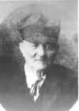
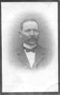

|
| De oude familie foto's (fam. Roos en
fam.Morre) kunnen bekeken worden als men eerst een wachtwoord
ingeeft. Wachtwoord te bekomen via mail.  |
|
klik op de foto voor vergroting te zien. De overgrootouders :Jan-Baptist Roos,
geboren op 15-08-1835 in Opbrakel. Hij is gedoopt op 16-08-1835 in
Opbrakel.
Jan-Baptist is overleden op 08-11-1924 in Opbrakel 89 jaar oud. 
Pauline Ockerman, 28 jaar oud, geboren op 05-02-1837 in Opbrakel. Pauline is overleden op 18-03-1906 in Opbrakel 69 jaar oud. Henri Van Den
Bossche,
geboren op 10-06-1849 in Opbrakel. Hij is gedoopt op 11-06-1849 in
Opbrakel.
Henri is overleden op 28-09-1918 in Nederbrakel 69 jaar oud. Hij
trouwde met: Prudentia De Geeter.

Franciscus (Frans) Roeland, geboren op 05/11/1854 in Everbeke. Franciscus (Frans) is overleden op 19/05/1932 in Nederbrakel, 77 jaar oud.Hij trouwde met Celina Van Wayenberge. Celina (Celine) Van Wayenberge, geboren op 02/04/1858 in Everbeke. Celina (Celine) is overleden op 18/02/1940 in Nederbrakel, 81 jaar oud. De grootouders : Jan-Baptist Roos, geboren op 14/11/1880 in Opbrakel. Jan-Baptist is overleden op 28/01/1954 in Opbrakel, 73 jaar oud.Hij trouwde met Maria Van Den Bossche. Maria Elodia Emilia Monica Van Den Bossche, geboren op 02/01/1882 in Nederbrakel. Maria Elodia Emilia Monica is overleden op 18/05/1965 in Opbrakel, 83 jaar oud. Pieter-Jozef Morre, geboren op 07/11/1880 in Nederbrakel. Pieter-Jozef is overleden op 06/03/1944 in Nederbrakel, 63 jaar oud.Hij trouwde met Anna Roeland. Anna Roeland, geboren op 03/01/1886 in Everbeek. Anna is overleden op 05/02/1952 in Erpe, 66 jaar oud. De ouders : Alphons Albert Roos, geboren op 12/11/1910 in Opbrakel. Alphons Albert is overleden op 17/04/1991 in Zotttegem, 80 jaar oud. Hij is begraven op 20/04/1991 in Nederbrakel.Hij trouwde met Maria Morre. Maria Julia Florentina Morre, geboren op 04/07/1911 in Nederbrakel. Maria Julia Florentina is overleden op 31/08/1986 in Opbrakel, 75 jaar oud. De schoonouders : Alfons Dubois, geboren
op 09/06/1924 in Opbrakel.Alfons is overleden op 20-07-2004 in
Cecilia Palmyra Anna Van Twembeke, geboren op 22/11/1925 in Elst. Cecilia is overleden op 08/08/2003 in Sint-Maria Horebeke, 77 jaar oud. Wij : Ghislain Gilbert Roos, geboren op 12/03/1954 in Nederbrakel.Ghislain Gilbert trouwde op 04/05/1979 in Nederbrakel met Marie-Rose Dubois. Marie-Rose Dubois, geboren op 28/09/1955 in Opbrakel als dochter van Alfons Dubois en Cecilia Palmyra Anna Van Twembeke. De kinderen : Sara Roos, geboren op 30/10/1980 in Zotttegem .
Onze 5 kleinkinderen :
Robby Hendrickx is geboren op 04-12-2006
om 06:15 in
Vince Roos is geboren op 18-07-2012 om 13:58 in Aalst, zoon van Hugo Roos en Mandy Matthijs. Bij de geboorte woog Vince 2970 gr. en was hij 49 cm. lang. Hij is gedoopt op 08-09-2012 in Burst. Fien Roos is geboren op 07-09-2016 om 08:50 in Zottegem, dochter van Hugo Roos en Mandy Matthijs. Bij de geboorte woog Fien 2920 gr. en was zij 48 cm. lang. Zij is gedoopt op 17-02-2018 in Herzele.Stan Roos is geboren op zondag 27-08-2017 om 04:01 in Zottegem, zoon van Hugo Roos en Mandy Matthijs. Bij de geboorte woog Stan 1950 gr.en was hij 44 cm. lang. Hij is gedoopt op 17-02-2018 in Herzele. Lars Roos is geboren op zondag 27-08-2017 om 04:03 in Zottegem, zoon van Hugo Roos en Mandy Matthijs. Bij de geboorte woog Lars 2450 gr.en was hij 45,5 cm. lang. Hij is gedoopt op 17-02-2018 in Herzele. 
|